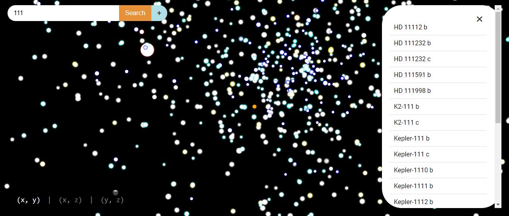
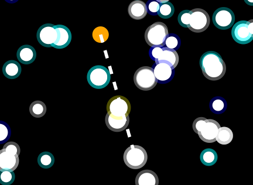

Map to view Exoplanets
About Us
We are two enthusiastic young students who have recently embarked on our coding journey. We're excited to participate in this contest to improve our HTML and CSS skills while gaining valuable experience. Thank you for your support as we take on this challenge! This is Candy and Violetz, and we can’t wait to share our progress.
Features
The interactive map is key for visualizing exoplanets. It helps users explore space easily and engage with the content.
The search function allows users to quickly find specific exoplanets, making navigation straightforward and enhancing overall satisfaction.
The information tab offers detailed facts about each exoplanet. This enriches the experience and helps users learn more about the planets they’re interested in.
This feature shows the connection between exoplanets and the sun, helping users understand their locations in space.
The constellation drawing feature lets users connect exoplanets to create constellations. While not essential, it adds a fun, creative aspect to the exploration experience.